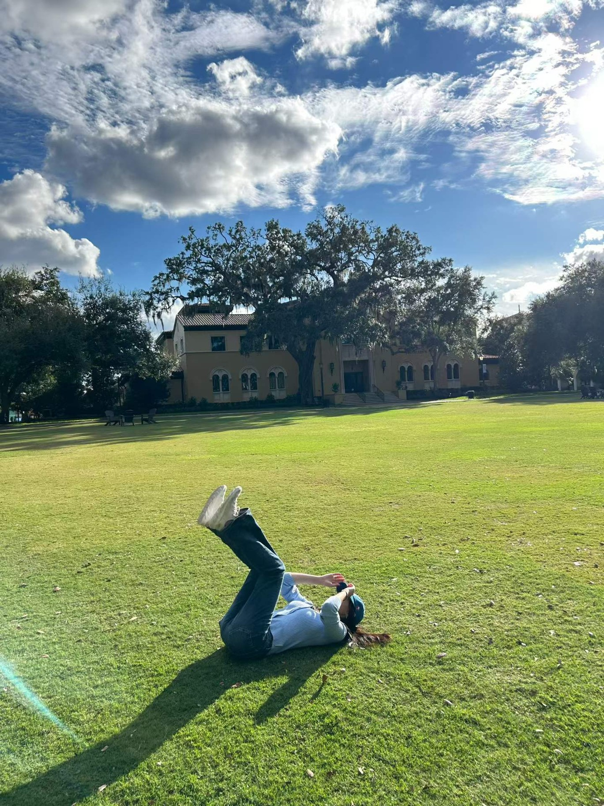
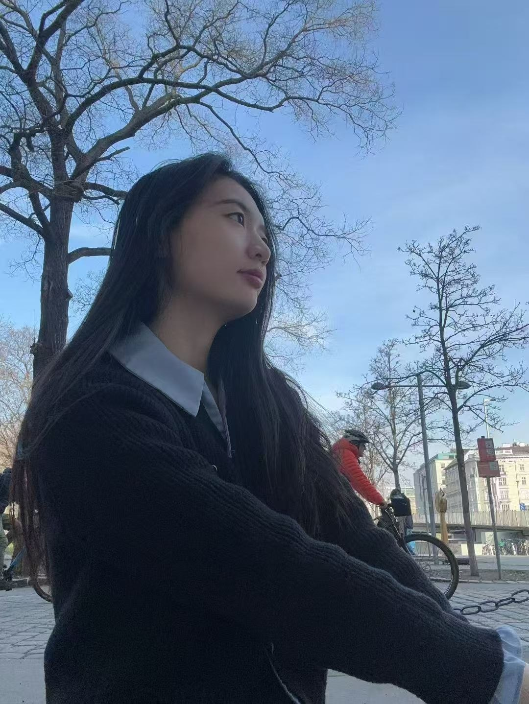
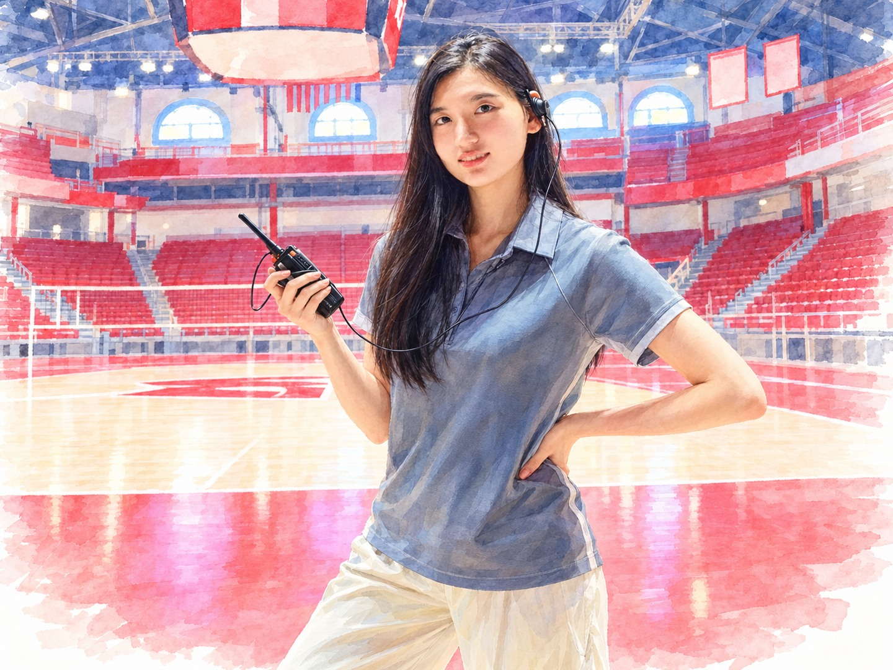
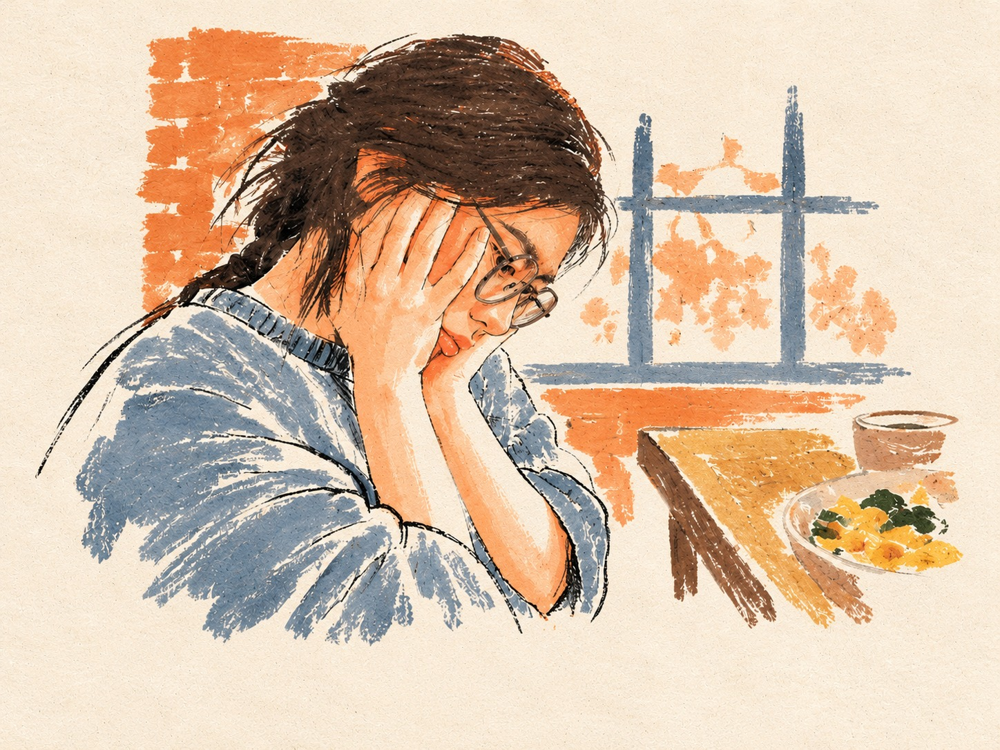
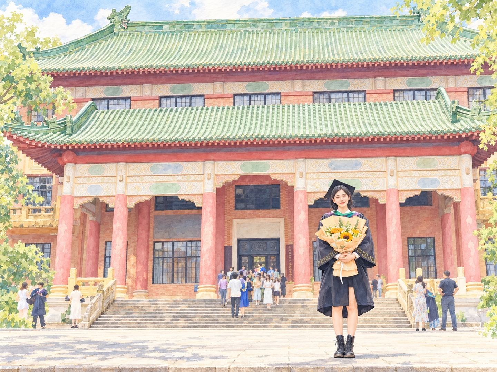
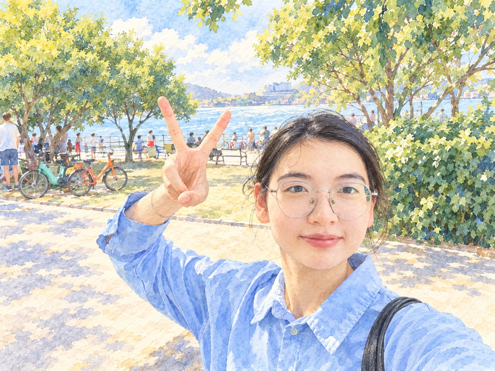

HELLO, I’M ZOEY
A curious mind.
A personal story.
Agricultural science, thoughtful operations and a little creative exploration.


A LITTLE INTRODUCTION
People, science
and possibilities.
I’m Zoey. My path has taken me from agricultural science in China to Denmark and an exchange semester in the US.
I enjoy bringing structure to everyday work, making people feel welcome, and turning photographs into creative stories.
More about me ↗Explore my world.
01 — 04
01 / Work ↗
Operations, events & guest service

02 / AI Gallery ↗
Visual experiments & stories

03 / Education ↗
Science, research & learning

04 / About ↗
A little more about me